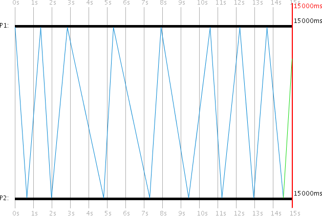

Distributed Systems Simulator - Part 2: Built-in Protocols
Published at 2026-04-01T00:00:00+03:00
This is the second blog post of the Distributed Systems Simulator series. This part covers all 10 built-in protocols with examples.
ds-sim on Codeberg (modernized, English-translated version)
These are all the posts of this series:
2026-03-31 Distributed Systems Simulator - Part 1: Introduction and GUI
2026-04-01 Distributed Systems Simulator - Part 2: Built-in Protocols (You are currently reading this)
2026-04-02 Distributed Systems Simulator - Part 3: Advanced Examples and Protocol API

Table of Contents
Protocols and Examples
The simulator comes with 10 built-in protocols. As described earlier, protocols are distinguished between server-side and client-side. Servers can respond to client messages, and clients can respond to server messages. Each process can support any number of protocols on both the client and server side. Users can also implement their own protocols using the simulator's Protocol API (see the Protocol API section).
The program directory contains a saved-simulations folder with example simulations for each protocol as serialized .dat files.
Dummy Protocol
The Dummy Protocol serves only as a template for creating custom protocols. When using the Dummy Protocol, only log messages are output when events occur. No further actions are performed.
Ping-Pong Protocol

In the Ping-Pong Protocol, two processes -- Client P1 and Server P2 -- constantly send messages back and forth. The Ping-Pong client starts the first request, to which the server responds to the client. The client then responds again, and so on. Each message includes a counter that is incremented at each station and logged in the log window.
Programmed Ping-Pong Events:
| Time (ms) | PID | Event |
|-----------|-----|--------------------------------|
| 0 | 1 | Ping-Pong Client activate |
| 0 | 2 | Ping-Pong Server activate |
| 0 | 1 | Ping-Pong Client request start |
It is important that Process 1 activates its Ping-Pong client before starting a Ping-Pong client request. Before a process can start a request, it must have the corresponding protocol activated. This also applies to all other protocols.
**Ping-Pong Storm Variant**

By adding a third process P3 as an additional Ping-Pong server, a Ping-Pong "Storm" can be realized. Since every client message now receives two server responses, the number of messages doubles with each round, creating an exponential message flood.
Programmed Ping-Pong Storm Events:
| Time (ms) | PID | Event |
|-----------|-----|--------------------------------|
| 0 | 1 | Ping-Pong Client activate |
| 0 | 2 | Ping-Pong Server activate |
| 0 | 3 | Ping-Pong Server activate |
| 0 | 1 | Ping-Pong Client request start |
Broadcast Protocol
. Dense crossing message lines show how a broadcast from P1 propagates to all processes, with each process re-broadcasting to others. Blue lines indicate delivered messages, green lines indicate messages still in transit.")
The Broadcast Protocol behaves similarly to the Ping-Pong Protocol. The difference is that the protocol tracks -- using a unique Broadcast ID -- which messages have already been sent. Each process re-broadcasts all received messages to others, provided it has not already sent them.
In this case, no distinction is made between client and server, so that the same action is performed when a message arrives at either side. This makes it possible, using multiple processes, to create a broadcast. P1 is the client and starts a request at 0ms and 2500ms. The simulation duration is exactly 5000ms. Since a client can only receive server messages and a server can only receive client messages, every process in this simulation is both server and client.
Programmed Broadcast Events:
| Time (ms) | PID | Event |
|-----------|-----|----------------------------------|
| 0 | 1-6 | Broadcast Client activate |
| 0 | 1-6 | Broadcast Server activate |
| 0 | 1 | Broadcast Client request start |
| 2500 | 1 | Broadcast Client request start |
Internal Synchronization Protocol
 shows a faster-running clock reaching 15976ms by simulation end. The blue message lines show P1 periodically synchronizing with P2 (server, no drift), with the time corrections visible as slight adjustments in P1's timeline.")
The Internal Synchronization Protocol is used for synchronizing the local process time, which can be applied when a process time is running incorrectly due to clock drift. When the client wants to synchronize its (incorrect) local process time t_c with a server, it sends a client request. The server responds with its own local process time t_s, allowing the client to calculate a new, more accurate time for itself.
After receiving the server response, the client P1 calculates its new local process time as:
t_c := t_s + 1/2 * (t'_min + t'_max)
This synchronizes P1's local time with an error of less than 1/2 * (t'_max - t'_min), where t'_min and t'_max are the assumed minimum and maximum transmission times configured in the protocol settings.
In the example, the client process has a clock drift of 0.1 and the server has 0.0. The client starts a request at local process times 0ms, 5000ms, and 10000ms. By simulation end, P1's time is synchronized to 15976ms (an error of -976ms from the global 15000ms).
Programmed Internal Sync Events:
| Time (ms) | PID | Event |
|-----------|-----|------------------------------------|
| 0 | 1 | Internal Sync Client activate |
| 0 | 2 | Internal Sync Server activate |
| 0 | 1 | Internal Sync Client request start |
| 5000 | 1 | Internal Sync Client request start |
| 10000 | 1 | Internal Sync Client request start |
Protocol variables (client-side):
- Min. transmission time (Long: 500): The assumed t'_min in milliseconds
- Max. transmission time (Long: 2000): The assumed t'_max in milliseconds
These can differ from the actual message transmission times t_min and t_max, allowing simulation of scenarios where the protocol is misconfigured and large synchronization errors occur.
Christian's Method (External Synchronization)
 and Christian's Method (P3) with P2 as shared server. Both P1 and P3 have clock drift 0.1. The visualization shows P1 synchronized to 14567ms (error: -433ms) while P3 synchronized to 15539ms (error: -539ms), demonstrating the different accuracy of the two methods.")
Christian's Method uses the RTT (Round Trip Time) to approximate the transmission time of individual messages. When the client wants to synchronize its local time t_c with a server, it sends a request and measures the RTT t_rtt until the server response arrives. The server response contains the local process time t_s from the moment the server sent the response. The client then calculates its new local time as:
t_c := t_s + 1/2 * t_rtt
The accuracy is +/- (1/2 * t_rtt - u_min) where u_min is a lower bound for message transmission time.
The visualization compares both synchronization methods side by side: P1 uses Internal Synchronization and P3 uses Christian's Method, with P2 serving both. Both P1 and P3 have clock drift 0.1. In this particular run, Internal Synchronization achieved a better result (-433ms error vs. -539ms), though results vary between runs due to random transmission times.
Programmed Comparison Events:
| Time (ms) | PID | Event |
|-----------|-----|--------------------------------------|
| 0 | 1 | Internal Sync Client activate |
| 0 | 1 | Internal Sync Client request start |
| 0 | 2 | Christian's Server activate |
| 0 | 2 | Internal Sync Server activate |
| 0 | 3 | Christian's Client activate |
| 0 | 3 | Christian's Client request start |
| 5000 | 1 | Internal Sync Client request start |
| 5000 | 3 | Christian's Client request start |
| 10000 | 1 | Internal Sync Client request start |
| 10000 | 3 | Christian's Client request start |
Berkeley Algorithm
 sending time requests to clients P1 and P3. After collecting responses, P2 calculates correction values and sends them back. Final times show P1=16823ms, P2=14434ms, P3=13892ms -- all brought closer together through averaging.")
The Berkeley Algorithm is another method for synchronizing local clocks. This is the first protocol where the server initiates the requests. The server acts as a coordinator. The client processes are passive and must wait until a server request arrives. The server must know which client processes participate in the protocol, which is configured in the server's protocol settings.
When the server wants to synchronize its local time t_s and the process times t_i of the clients (i = 1,...,n), it sends a server request. n is the number of participating clients. The clients then send their local process times back to the server. The server measures the RTTs r_i for all client responses.
After all responses are received, the server sets its own time to the average t_avg of all known process times (including its own). The transmission time of a client response is estimated as half the RTT:
t_avg := 1/(n+1) * (t_s + SUM(r_i/2 + t_i))
t_s := t_avg
The server then calculates a correction value k_i := t_avg - t_i for each client and sends it back. Each client sets its new time to t'_i := t'_i + k_i.
Programmed Berkeley Events:
| Time (ms) | PID | Event |
|-----------|-----|-----------------------------------|
| 0 | 1 | Berkeley Client activate |
| 0 | 2 | Berkeley Server activate |
| 0 | 3 | Berkeley Client activate |
| 0 | 2 | Berkeley Server request start |
| 7500 | 2 | Berkeley Server request start |
Protocol variables (server-side):
- PIDs of participating processes (Integer[]: [1,3]): The PIDs of the Berkeley client processes. The protocol will not work if a non-existent PID is specified or if the process does not support the Berkeley protocol on the client side.
One-Phase Commit Protocol
 and recovers at 5000ms. P2 (server) periodically sends commit requests. The red lines show lost messages during P1's crash period, while blue lines show successful message exchanges after recovery.")
The One-Phase Commit Protocol is designed to move any number of clients to a commit. In practice, this could be creating or deleting a file that each client has a local copy of. The server is the coordinator and initiates the commit request. The server periodically resends the commit request until every client has acknowledged it. For this purpose, the PIDs of all participating client processes and a timer for resending must be configured.
In the example, P1 and P3 are clients and P2 is the server. P1 crashes at 1000ms and recovers at 5000ms. The first two commit requests fail to reach P1 due to its crash. Only the third attempt succeeds. Each client acknowledges a commit request only once.
Programmed One-Phase Commit Events:
| Time (ms) | PID | Event |
|-----------|-----|----------------------------------------|
| 0 | 1 | 1-Phase Commit Client activate |
| 0 | 2 | 1-Phase Commit Server activate |
| 0 | 3 | 1-Phase Commit Client activate |
| 0 | 2 | 1-Phase Commit Server request start |
| 1000 | 1 | Process crash |
| 5000 | 1 | Process revival |
Protocol variables (server-side):
- Time until resend (Long: timeout = 2500): Milliseconds to wait before resending the commit request
- PIDs of participating processes (Integer[]: pids = [1,3]): The client process PIDs that should commit
Two-Phase Commit Protocol
 orchestrates a two-phase voting process with clients P1 and P3. The complex message pattern shows the voting phase followed by the commit/abort phase, with messages crossing between all three processes over a 10-second simulation.")
The Two-Phase Commit Protocol is an extension of the One-Phase Commit Protocol. The server first sends a request to all participating clients asking whether they want to commit. Each client responds with true or false. The server periodically retries until all results are collected. After receiving all votes, the server checks whether all clients voted true. If at least one client voted false, the commit process is aborted and a global result of false is sent to all clients. If all voted true, the global result true is sent. The global result is periodically resent until each client acknowledges receipt.
In the example, P1 and P3 are clients and P2 is the server. The server sends its first request at 0ms. Here both P1 and P3 vote true, so the commit proceeds.
Programmed Two-Phase Commit Events:
| Time (ms) | PID | Event |
|-----------|-----|----------------------------------------|
| 0 | 1 | 2-Phase Commit Client activate |
| 0 | 2 | 2-Phase Commit Server activate |
| 0 | 3 | 2-Phase Commit Client activate |
| 0 | 2 | 2-Phase Commit Server request start |
Example log extract showing the two-phase voting process:
000000ms: PID 2: Message sent; ID: 94; Protocol: 2-Phase Commit
Boolean: wantVote=true
000905ms: PID 3: Message received; ID: 94; Protocol: 2-Phase Commit
000905ms: PID 3: Message sent; ID: 95; Protocol: 2-Phase Commit
Integer: pid=3; Boolean: isVote=true; vote=true
000905ms: PID 3: Vote true sent
001880ms: PID 2: Message received; ID: 95; Protocol: 2-Phase Commit
001880ms: PID 2: Vote from Process 3 received! Result: true
001947ms: PID 1: Message received; ID: 94; Protocol: 2-Phase Commit
001947ms: PID 1: Vote true sent
003137ms: PID 2: Votes from all participating processes received!
Global result: true
003137ms: PID 2: Message sent; ID: 99; Protocol: 2-Phase Commit
Boolean: isVoteResult=true; voteResult=true
004124ms: PID 1: Global vote result received. Result: true
006051ms: PID 2: All participants have acknowledged the vote
010000ms: Simulation ended
Protocol variables (server-side):
- Time until resend (Long: timeout = 2500): Milliseconds to wait before resending
- PIDs of participating processes (Integer[]: pids = [1,3]): Client PIDs that should vote and commit
Protocol variables (client-side):
- Commit probability (Integer: ackProb = 50): The probability in percent that the client votes true (for commit)
Basic Multicast Protocol
 sends periodic multicast messages to servers P1 and P3. P3 crashes at 3000ms (shown in red) and recovers at 6000ms. Red lines indicate lost messages, blue lines show delivered messages. Some messages to P1 are also lost due to the 30% message loss probability.")
The Basic Multicast Protocol is very simple. The client always initiates the request, which represents a simple multicast message. The Basic Multicast servers serve only to receive the message. No acknowledgments are sent. The client P2 sends a multicast message every 2500ms to servers P1 and P3.
P1 can only receive multicast messages after 2500ms because it does not support the protocol before then. P3 is crashed from 3000ms to 6000ms and also cannot receive messages during that time. Each process has a 30% message loss probability, so some messages are lost in transit (shown in red).
In this example, the 3rd multicast message to P3 and the 5th and 6th messages to P1 were lost. Only the 4th multicast message reached both destinations.
Programmed Basic Multicast Events:
| Time (ms) | PID | Event |
|-----------|-----|----------------------------------------|
| 0 | 2 | Basic Multicast Client activate |
| 0 | 3 | Basic Multicast Server activate |
| 0 | 2 | Basic Multicast Client request start |
| 2500 | 1 | Basic Multicast Server activate |
| 2500 | 2 | Basic Multicast Client request start |
| 3000 | 3 | Process crash |
| 5000 | 2 | Basic Multicast Client request start |
| 6000 | 3 | Process revival |
| 7500 | 2 | Basic Multicast Client request start |
| 10000 | 2 | Basic Multicast Client request start |
| 12500 | 2 | Basic Multicast Client request start |
Reliable Multicast Protocol
 sends multicast messages to servers P1 and P3, retrying until acknowledgments are received from all servers. P3 crashes at 3000ms and recovers at 10000ms. Red lines show lost messages, blue lines show delivered ones. Despite failures, all servers eventually receive and acknowledge the multicast.")
In the Reliable Multicast Protocol, the client periodically resends its multicast message until it has received an acknowledgment from all participating servers. After each retry, the client "forgets" which servers have already acknowledged, so each new attempt must be acknowledged again by all participants.
In the example, P2 is the client and P1 and P3 are the servers. At 0ms, the client initiates its multicast message. The message loss probability is set to 30% on all processes. The client needs exactly 5 attempts until successful delivery:
- Attempt 1: P1 doesn't support the protocol yet. P3 receives the message but its ACK is lost.
- Attempt 2: The message to P1 is lost. P3 receives it but is crashed and can't process it.
- Attempt 3: P1 receives the message and ACKs successfully. The message to P3 is lost.
- Attempt 4: P1 receives and ACKs again. P3 receives it but is still crashed.
- Attempt 5: Both P1 and P3 receive the message and ACK successfully.
Programmed Reliable Multicast Events:
| Time (ms) | PID | Event |
|-----------|-----|------------------------------------------|
| 0 | 3 | Reliable Multicast Server activate |
| 0 | 2 | Reliable Multicast Client activate |
| 0 | 2 | Reliable Multicast Client request start |
| 2500 | 1 | Reliable Multicast Server activate |
| 3000 | 3 | Process crash |
| 10000 | 3 | Process revival |
Example log extract:
000000ms: PID 2: Reliable Multicast Client activated
000000ms: PID 2: Message sent; ID: 280; Protocol: Reliable Multicast
Boolean: isMulticast=true
000000ms: PID 3: Reliable Multicast Server activated
001590ms: PID 3: Message received; ID: 280; Protocol: Reliable Multicast
001590ms: PID 3: ACK sent
002500ms: PID 1: Reliable Multicast Server activated
002500ms: PID 2: Message sent; ID: 282; Protocol: Reliable Multicast
Boolean: isMulticast=true
003000ms: PID 3: Crashed
005000ms: PID 2: Message sent; ID: 283; Protocol: Reliable Multicast
005952ms: PID 1: Message received; ID: 283
005952ms: PID 1: ACK sent
007937ms: PID 2: ACK from Process 1 received!
...
011813ms: PID 2: ACK from Process 3 received!
011813ms: PID 2: ACKs from all participating processes received!
015000ms: Simulation ended
Protocol variables (server-side):
- Time until resend (Long: timeout = 2500): Milliseconds to wait before resending the multicast
- PIDs of participating processes (Integer[]: pids = [1,3]): Server PIDs that should receive the multicast
Read the next post of this series:
Distributed Systems Simulator - Part 3: Advanced Examples and Protocol API
Other related posts are:
2026-03-01 Loadbars 0.13.0 released
2022-12-24 (Re)learning Java - My takeaways
2022-03-06 The release of DTail 4.0.0
2016-11-20 Object oriented programming with ANSI C
E-Mail your comments to paul@nospam.buetow.org
Back to the main site